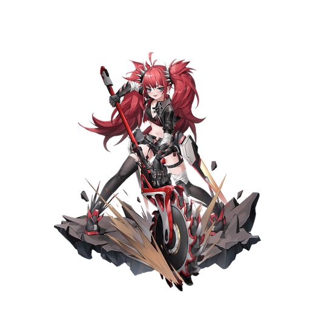

基本データ
- コスト
- 2.0
- 体力
- 未入力
- 赤ロック
- 27
- 動画
- 登録動画

Move Table
| 射撃 | 名称 | 弾数 | 威力 | 備考 |
|---|---|---|---|---|
| メイン射撃 | 虎牙1号 | 5(3凸時6) | 210 | 実弾属性の銛 |
| サブ射撃 | 虎牙2号 | 1 | 195 | ビームで消えない鋸刃 |
| 横サブ射撃 | 虎牙2号・パルス | 180 | - | 1凸で解禁。横移動しながらスタン鋸射出 |
| 後サブ射撃 | 虎牙2号・三連射 | 1 | 195 | 3wayに鋸刃を撃つ、強よろけ |
| 後メイン格闘 | かかってこい！ | 1(2凸時∞) | 30 | 引き寄せるアンカー |
| 格闘 | 名称 | 入力 | 弾数 | 威力 | 備考 |
|---|---|---|---|---|---|
| メイン格闘 | ストリート格闘術 | NNN | - | 570 | 3入力4段格闘 サブ射派生 |
| 逃がさねぇ！ | N→サブ射 | - | - | 646 | 5凸で解禁。高威力 |
| NN→サブ射 | - | - | 752 | ||
| 横格闘 | ストリート格闘術 | 横N | - | 522 | 2入力3段格闘 サブ射派生 |
| 逃がさねぇ！ | 横→サブ射 | - | - | 701 | 5凸で解禁 |
| 前格闘 | ストリート格闘術 | 前N | - | 733 | 3入力6段格闘 サブ射派生 |
| 逃がさねぇ！ | 前→サブ射 | - | - | 646 | 5凸で解禁 |
| 前N→サブ射 | - | - | 773 | ||
| 前NN（1段目）→サブ射 | - | - | 829 | ||
| サブ格闘 | ホモテリウム・アサルト | サブ格 | - | 411 | 打ち上げる1段格闘 |
| 横サブ格闘 | ホモテリウム・チェイス | 横サブ格 | - | 377 | 回り込んで鋸突撃 メイン射派生 |
| 虎牙1号・連射 | 横サブ格→メイン射 | 1 | - | 441 | 落下しながら銛連射 |
| 後サブ格闘 | ホモテリウム・ラッシュ | 後サブ格 | 1 | 602 | 急上昇しスパアマ付きの掴み引きずり格闘 ダウン引き起こし効果あり |
| バーストアタック | 名称 | - | 威力 | ||
| F/B/SMD | - | 備考 | |||
| バーストアタック | 鋸刃カーニバル | - | 1102/1009/916 | 初段がアンカーの乱舞覚醒技 |